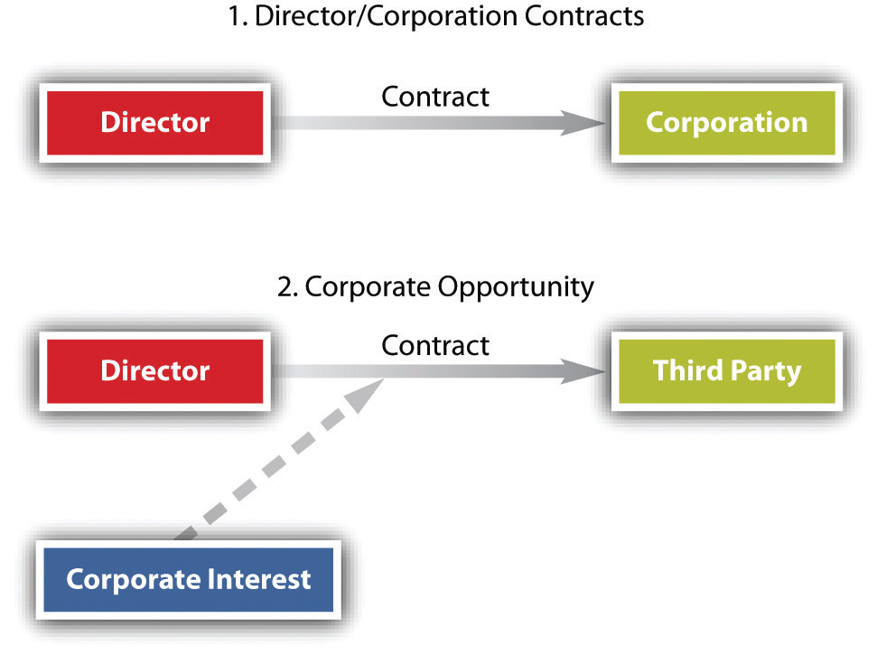

Not so long ago, boards of directors of large companies were quiescent bodies, virtual rubber stamps for their friends among management who put them there. By the late 1970s, with the general increase in the climate of litigiousness, one out of every nine companies on the Fortune 500 list saw its directors or officers hit with claims for violation of their legal responsibilities.“D & O Claims Incidence Rises,” Business Insurance, November 12, 1979, 18. In a seminal case, the Delaware Supreme Court found that the directors of TransUnion were grossly negligent in accepting a buyout price of $55 per share without sufficient inquiry or advice on the adequacy of the price, a breach of their duty of care owed to the shareholders. The directors were held liable for $23.5 million for this breach.Smith v. Van Gorkom, 488 A.2d 858 (Del. 1985). Thus serving as a director or an officer was never free of business risks. Today, the task is fraught with legal risk as well.
Two main fiduciary duties apply to both directors and officers: one is a duty of loyalty, the other the duty of care. These duties arise from responsibilities placed upon directors and officers because of their positions within the corporation. The requirements under these duties have been refined over time. Courts and legislatures have both narrowed the duties by defining what is or is not a breach of each duty and have also expanded their scope. Courts have further refined the duties, such as laying out tests such as in the Caremark case, outlined in Section 27.4.3 "Duty of Care". Additionally, other duties have been developed, such as the duties of good faith and candor.
As a fiduciary of the corporation, the director owes his primary loyalty to the corporation and its stockholders, as do the officers and majority shareholders. This responsibility is called the duty of loyaltyFiduciary obligation requiring loyalty of directors and officers to the corporation and its shareholders.. When there is a conflict between a director’s personal interest and the interest of the corporation, he is legally bound to put the corporation’s interest above his own. This duty was mentioned in Exercise 3 of Section 27.2 "Rights of Shareholders" when Ted usurped a corporate opportunity and will be discussed later in this section.
Figure 27.3 Common Conflict Situations
Two situations commonly give rise to the director or officer’s duty of loyalty: (1) contracts with the corporation and (2) corporate opportunity (see Figure 27.3 "Common Conflict Situations").
The law does not bar a director from contracting with the corporation he serves. However, unless the contract or transaction is “fair to the corporation,” Sections 8.61, 8.62, and 8.63 of the Revised Model Business Corporation Act (RMBCA) impose on him a stringent duty of disclosure. In the absence of a fair transaction, a contract between the corporation and one of its directors is voidable. If the transaction is unfair to the corporation, it may still be permitted if the director has made full disclosure of his personal relationship or interest in the contract and if disinterested board members or shareholders approve the transaction.
Whenever a director or officer learns of an opportunity to engage in a variety of activities or transactions that might be beneficial to the corporation, his first obligation is to present the opportunity to the corporation. The rule encompasses the chance of acquiring another corporation, purchasing property, and licensing or marketing patents or products. This duty of disclosure was placed into legal lexicon by Judge Cardozo in 1928 when he stated that business partners owe more than a general sense of honor among one another; rather, they owe “the punctilio of honor most sensitive.”Meinhard v. Salmon, 164 N.W. 545 (N.Y. 1928). Thus when a corporate opportunity arises, business partners must disclose the opportunity, and a failure to disclose is dishonest—a breach of the duty of loyalty.
Whether a particular opportunity is a corporate opportunity can be a delicate question. For example, BCT owns a golf course and a country club. A parcel of land adjacent to their course comes on the market for sale, but BCT takes no action. Two BCT officers purchase the land personally, later informing the BCT board about the purchase and receiving board ratification of their purchase. Then BCT decides to liquidate and enters into an agreement with the two officers to sell both parcels of land. A BCT shareholder brings a derivative suit against the officers, alleging that purchasing the adjacent land stole a corporate opportunity. The shareholder would be successful in his suit. In considering Farber v. Servan Land Co., Inc.,Farber v. Servan Land Co., Inc., 662 F.2d 371 (5th Cir. 1981). a case just like the one described, the Farber court laid out four factors in considering whether a corporate opportunity has been usurped:
In considering these factors, the Farber court held that the officers had breached a duty of loyalty to the corporation by individually purchasing an asset that would have been deemed a corporate opportunity.
When a director serves on more than one board, the problem of corporate opportunity becomes even more complex, because he may be caught in a situation of conflicting loyalties. Moreover, multiple board memberships pose another serious problem. A direct interlockA situation where one person sits on the board of directors of two different companies. occurs when one person sits on the boards of two different companies; an indirect interlockA situation where directors of two different companies serve jointly on the board of a third company. happens when directors of two different companies serve jointly on the board of a third company. The Clayton Act prohibits interlocking directorates between direct competitors. Despite this prohibition, as well as public displeasure, corporate board member overlap is commonplace. According to an analysis by USA Today and The Corporate Library, eleven of the fifteen largest companies have at least two board members who also sit together on the board of another corporation. Furthermore, CEOs of one corporation often sit on the boards of other corporations. Bank board members may sit on the boards of other corporations, including the bank’s own clients. This web of connections has both pros and cons.For a further discussion of board member connectedness, see Matt Krant, “Web of Board Members Ties Together Corporation America,” at http://www.usatoday.com/money/companies/management/2002-11-24-interlock_x.htm.
The second major aspect of the director’s responsibility is that of duty of careFiduciary obligation upon directors and officers to act with the care an ordinarily prudent person in a like position would exercise under similar circumstances.. Section 8.30 of RMBCA calls on the director to perform his duties “with the care an ordinarily prudent person in a like position would exercise under similar circumstances.” An “ordinarily prudent person” means one who directs his intelligence in a thoughtful way to the task at hand. Put another way, a director must make a reasonable effort to inform himself before making a decision, as discussed in the next paragraph. The director is not held to a higher standard required of a specialist (finance, marketing) unless he is one. A director of a small, closely held corporation will not necessarily be held to the same standard as a director who is given a staff by a large, complex, diversified company. The standard of care is that which an ordinarily prudent person would use who is in “a like position” to the director in question. Moreover, the standard is not a timeless one for all people in the same position. The standard can depend on the circumstances: a fast-moving situation calling for a snap decision will be treated differently later, if there are recriminations because it was the wrong decision, than a situation in which time was not of the essence.
What of the care itself? What kind of care would an ordinarily prudent person in any situation be required to give? Unlike the standard of care, which can differ, the care itself has certain requirements. At a minimum, the director must pay attention. He must attend meetings, receive and digest information adequate to inform him about matters requiring board action, and monitor the performance of those to whom he has delegated the task of operating the corporation. Of course, documents can be misleading, reports can be slanted, and information coming from self-interested management can be distorted. To what heights must suspicion be raised? Section 8.30 of the RMBCA forgives directors the necessity of playing detective whenever information, including financial data, is received in an apparently reliable manner from corporate officers or employees or from experts such as attorneys and public accountants. Thus the director does not need to check with another attorney once he has received financial data from one competent attorney.
A New Jersey Supreme Court decision considered the requirements of fiduciary duties, particularly the duty of care. Pritchard & Baird was a reissuance corporation owned by Pritchard and having four directors: Pritchard, his wife, and his two sons. Pritchard and his sons routinely took loans from the accounts of the firm’s clients. After Pritchard died, his sons increased their borrowing, eventually sending the business into bankruptcy. During this time, Mrs. Pritchard developed a fondness for alcohol, drinking heavily and paying little attention to her directorship responsibilities. Creditors sued Mrs. Pritchard for breaches of her fiduciary duties, essentially arguing that the bankruptcy would not have occurred had she been acting properly. After both the trial court and appellate court found for the creditors, the New Jersey Supreme Court took up the case. The court held that a director must have a basic understanding of the business of the corporation upon whose board he or she sits. This can be accomplished by attending meetings, reviewing and understanding financial documents, investigating irregularities, and generally being involved in the corporation. The court found that Mrs. Pritchard’s being on the board because she was the spouse was insufficient to excuse her behavior, and that had she been performing her duties, she could have prevented the bankruptcy.Francis v. United Jersey Bank, 87 N.J. 15, 432 A.2d 814 (N.J. 1981).
Despite the fiduciary requirements, in reality a director does not spend all his time on corporate affairs, is not omnipotent, and must be permitted to rely on the word of others. Nor can directors be infallible in making decisions. Managers work in a business environment, in which risk is a substantial factor. No decision, no matter how rigorously debated, is guaranteed. Accordingly, courts will not second-guess decisions made on the basis of good-faith judgment and due care. This is the business judgment rulePresumption given by the courts to corporate directors that their actions were informed and done with good faith and with an honest belief that the actions were in the best interests of the corporation., mentioned in previous chapters. The business judgment rule was coming into prominence as early as 1919 in Dodge v. Ford, discussed in Chapter 26 "Legal Aspects of Corporate Finance". It has been a pillar of corporate law ever since. As described by the Delaware Supreme Court: “The business judgment rule is an acknowledgment of the managerial prerogatives of Delaware directors.…It is a presumption that in making a business decision the directors of a corporation acted on an informed basis, in good faith and in the honest belief that the action taken was in the best interests of the company.”Aronson v. Lewis, 473 A.2d 805, 812 (Del. 1984).
Under the business judgment rule, the actions of directors who fulfill their fiduciary duties will not be second-guessed by a court. The general test is whether a director’s decision or transaction was so one sided that no businessperson of ordinary judgment would reach the same decision. The business judgment rule has been refined over time. While the business judgment rule may seem to provide blanket protection for directors (the rule was quite broad as outlined by the court in Dodge v. Ford), this is not the case. The rule does not protect every decision made by directors, and they may face lawsuits, a topic to which we now turn. For further discussions of the business judgment rule, see Cede & Co. v. Technicolor, Inc.,Cede & Co. v. Technicolor, Inc., 634 A.2d 345 (Del. 1993). In re The Walt Disney Co. Derivative Litigation,In re The Walt Disney Co. Derivative Litigation, 906 A.2d 27 (Del. 2006). and Smith v. Van Gorkom.Smith v. Van Gorkom, 488 A.2d 858 (Del. 1985).
If a shareholder is not pleased by a director’s decision, that shareholder may file a derivative suit. The derivative suit may be filed by a shareholder on behalf of the corporation against directors or officers of the corporation, alleging breach of their fiduciary obligations. However, a shareholder, as a prerequisite to filing a derivative action, must first demand that the board of directors take action, as the actual party in interest is the corporation, not the shareholder (meaning that if the shareholder is victorious in the lawsuit, it is actually the corporation that “wins”). If the board refuses, is its decision protected by the business judgment rule? The general rule is that the board may refuse to file a derivative suit and will be protected by the business judgment rule. And even when a derivative suit is filed, directors can be protected by the business judgment rule for decisions even the judge considers to have been poorly made. See In re The Walt Disney Co. Derivative Litigation, (see Section 27.5.2 "Business Judgment Rule").
In a battle for control of a corporation, directors (especially “inside” directors, who are employees of the corporation, such as officers) often have an inherent self-interest in preserving their positions, which can lead them to block mergers that the shareholders desire and that may be in the firm’s best interest. As a result, Delaware courts have modified the usual business judgment presumption in this situation. In Unocal Corp. v. Mesa Petroleum,Unocal Corp. v. Mesa Petroleum, 493 A.2d 946 (Del. 1985). for instance, the court held that directors who adopt a defensive mechanism “must show that they had reasonable grounds for believing that a danger to corporate policy and effectiveness existed.…[T]hey satisfy that burden ‘by showing good faith and reasonable investigation.’” The business judgment rule clearly does not protect every decision of the board. The Unocal court developed a test for the board: the directors may only work to prevent a takeover when they can demonstrate a threat to the policies of the corporation and that any defensive measures taken to prevent the takeover were reasonable and proportional given the depth of the threat. The Unocal test was modified further by requiring a finding, before a court steps in, that the actions of a board were coercive, a step back toward the business judgment rule.Unitrin v. American General Corp., 651 A.2d 1361 (Del. 1995).
In a widely publicized case, the Delaware Supreme Court held that the board of Time, Inc. met the Unocal test—that the board reasonably concluded that a tender offer by Paramount constituted a threat and acted reasonably in rejecting Paramount’s offer and in merging with Warner Communications.Paramount Communications, Inc. v. Time, Inc., 571 A.2d 1140 (Del. 1989).
The specific elements of the fiduciary duties are not spelled out in stone. For example, the Delaware courts have laid out three factors to examine when determining whether a duty of care has been breached:In re Caremark International Inc. Derivative Litigation, 698 A.2d 959 (Del. Ch. 1996).
Thus the court expanded the duty of oversight (which is included under the umbrella of the duty of care; these duties are often referred to as the Caremark duties). Furthermore, courts have recognized a duty of good faithFiduciary duty to act honestly and avoid violations of corporate norms and business practices.—a duty to act honestly and avoid violations of corporate norms and business practices.For more information, see Melvin Eisenberg, “The Duty of Good Faith in Corporate Law,” 31 Delaware Journal of Corporate Law, 1 (2005). Therefore, the split in ownership and decision making within the corporate structure causes rifts, and courts are working toward balancing the responsibilities of the directors to their shareholders with their ability to run the corporation.
Until the 1980s, the law in all the states imposed on corporate directors the obligation to advance shareholders’ economic interests to ensure the long-term profitability of the corporation. Other groups—employees, local communities and neighbors, customers, suppliers, and creditors—took a back seat to this primary responsibility of directors. Of course, directors could consider the welfare of these other groups if in so doing they promoted the interests of shareholders. But directors were not legally permitted to favor the interests of others over shareholders. The prevailing rule was, and often still is, that maximizing shareholder value is the primary duty of the board. Thus in Revlon, Inc. v. MacAndrews & Forbes Holdings, Inc.,Revlon, Inc. v. MacAndrews & Forbes Holdings, Inc., 506 A.2d 173 (Del. 1986). the Delaware Supreme Court held that Revlon’s directors had breached their fiduciary duty to the company’s shareholders in response to a hostile tender offer from Pantry Pride. While the facts of the case are intricate, the general gist is that the Revlon directors thwarted the hostile tender by adopting a variation of a poison pill involving a tender offer for their own shares in exchange for debt, effectively eliminating Pantry Pride’s ability to take over the firm. Pantry Pride upped its offer price, and in response, Revlon began negotiating with a leveraged buyout by a third party, Forstmann Little. Pantry Pride publicly announced it would top any bid made by Forstmann Little. Despite this, the Revlon board negotiated a deal with Forstmann Little. The court noted an exception to the general rule that permitted directors to consider the interests of other groups as long as “there are rationally related benefits accruing to the stockholders.” But when a company is about to be taken over, the object must be to sell it to the highest bidder, Pantry Pride in this case. It is then, said the court, in situations where the corporation is to be sold, that “concern for nonstockholder interests is inappropriate,” thus giving rise to what are commonly called the Revlon duties.
Post-Revlon, in response to a wave of takeovers in the late 1980s, some states have enacted laws to give directors legal authority to take account of interests other than those of shareholders in deciding how to defend against hostile mergers and acquisitions. These laws are known as constituency statutesStatutes that permit corporate directors to take into account interests other than maximizing shareholder value., because they permit directors to take account of the interests of other constituencies of corporations. These do not permit a corporation to avoid its Revlon duties (that when a corporation is up for sale, it must be sold to the highest bidder) but will allow a corporation to consider factors other than shareholder value in determining whether to make charitable donations or reinvest profits. This ability has been further expanding as the concept of corporate social responsibility has grown, as discussed later in this section.
Although the other constituency statutes are not identically worded, they are all designed to release directors from their formal legal obligation to keep paramount the interests of shareholders. The Pennsylvania and Indiana statutes make this clear; statutes in other states are worded a bit more ambiguously, but the intent of the legislatures in enacting these laws seems clear: directors may give voice to employees worried about the loss of jobs or to communities worried about the possibility that an out-of-state acquiring company may close down a local factory to the detriment of the local economy. So broadly worded are these laws that although the motive for enacting them was to give directors a weapon in fighting hostile tender offers, in some states the principle applies to any decision by a board of directors. So, for example, it is possible that a board might legally decide to give a large charitable grant to a local community—a grant so large that it would materially decrease an annual dividend, contrary to the general rule that at some point the interests of shareholders in dividends clearly outweighs the board’s power to spend corporate profits on “good works.”
Critics have attacked the constituency statutes on two major grounds: first, they substitute a clear principle of conduct for an amorphous one, because they give no guidance on how directors are supposed to weigh the interests of a corporation’s various constituencies. Second, they make it more difficult for shareholders to monitor the performance of a company’s board; measuring decisions against the single goal of profit maximization is far easier than against the subjective goal of “balancing” a host of competing interests. Constituency statutes run contrary to the concept of shareholders as owners, and of the fiduciary duties owed to them, effectively softening shareholder power. Nevertheless, since many states now have constituency statutes, it is only reasonable to expect that the traditional doctrine holding shareholder interests paramount will begin to give way, even as the shareholders challenge new decisions by directors that favor communities, employees, and others with an important stake in the welfare of the corporations with which they deal. For a more complete discussion of constituency statutes, see “Corporate Governance and the Sarbanes-Oxley Act: Corporate Constituency Statutes and Employee Governance.”Brett H. McDonnell, “Corporate Governance and the Sarbanes-Oxley Act: Corporate Constituency Statutes and Employee Governance,” William Mitchell Law Review 30 (2004): 1227.
Many modern corporations have begun to promote socially responsible behavior. While dumping toxic waste out the back door of the manufacturing facility rather than expending funds to properly dispose of the waste may result in an increase in value, the consequences of dumping the waste can be quite severe, whether from fines from regulatory authorities or from public backlash. Corporate social responsibility results from internal corporate policies that attempt to self-regulate and fulfill legal, ethical, and social obligations. Thus under corporate social responsibility, corporations may make donations to charitable organizations or build environmentally friendly or energy-efficient buildings. Socially irresponsible behavior can be quite disastrous for a corporation. Nike, for example, was hit by consumer backlash due to its use of child labor in other countries, such as India and Malaysia. British Petroleum (BP) faced public anger as well as fines and lawsuits for a massive oil spill in the Gulf of Mexico. This spill had serious consequences for BP’s shareholders—BP stopped paying dividends, its stock price plummeted, and it had to set aside significant amounts of money to compensate injured individuals and businesses.
Many businesses try to fulfill what is commonly called the triple bottom line, which is a focus on profits, people, and the planet. For example, Ben and Jerry’s, the ice cream manufacturer, had followed a triple bottom line practice for many years. Nonetheless, when Ben and Jerry’s found itself the desired acquisition of several other businesses, it feared that a takeover of the firm would remove this focus, since for some firms, there is only one bottom line—profits. Unilever offered $43.60 per share for Ben and Jerry’s. Several Ben and Jerry’s insiders made a counteroffer at $38 per share, arguing that a lower price was justified given the firm’s focus. Ultimately, in a case like this, the Revlon duties come into play: when a corporation is for sale, corporate social responsibility goes out the window and only one bottom line exists—maximum shareholder value. In the case of Ben and Jerry’s, the company was acquired in 2000 for $326 million by Unilever, the Anglo-Dutch corporation that is the world’s largest consumer products company.
The Sarbanes-Oxley Act of 2002, enacted following several accounting scandals, strengthens the duties owed by the board and other corporate officers. In particular, Title III contains corporate responsibility provisions, such as requiring senior executives to vouch for the accuracy and completeness of their corporation’s financial disclosures. While the main goal of Sarbanes-Oxley is to decrease the incidents of financial fraud and accounting tricks, its operative goal is to strengthen the fiduciary duties of loyalty and care as well as good faith.
The modern trend has been to impose more duties. Delaware has been adding to the list of fiduciary responsibilities other than loyalty and care. As mentioned previously, the Delaware judicial system consistently recognizes a duty of good faith. The courts have further added a duty of candor with shareholders when the corporation is disseminating information to its investors. Particular duties arise in the context of mergers, acquisitions, and tender offers. As mentioned previously in the Revlon case, the duty owed to shareholders in situations of competing tender offers is that of maximum value. Other duties may arise, such as when directors attempt to retain their positions on the board in the face of a hostile tender offer. Trends in fiduciary responsibilities, as well as other changes in the business legal field, are covered extensively by the American Bar Association at http://www.americanbar.org/groups/business_law.html.
Alice, the director of BCT, has been charged with breaching her duty of care. Is she personally liable for a breach of the duty of care? How can a director avoid liability? Of course, she can never avoid defending a lawsuit, for in the wake of any large corporate difficulty—from a thwarted takeover bid to a bankruptcy—some group of shareholders will surely sue. But the director can immunize herself ultimately by carrying out her duties of loyalty and care. In practice, this often means that she should be prepared to document the reasonableness of her reliance on information from all sources considered. Second, if the director dissents from action that she considers mistaken or unlawful, she should ensure that her negative vote is recorded. Silence is construed as assent to any proposition before the board, and assent to a woefully mistaken action can be the basis for staggering liability.
Corporations, however, are permitted to limit or eliminate the personal liability of its directors. For example, Delaware law permits the articles of incorporation to contain a provision eliminating or limiting the personal liability of directors to the corporation, with some limitations.Del. Code Ann., Title 8, Section 102(b)(7) (2011).
Beyond preventive techniques, another measure of protection from director liability is indemnificationA method of protecting directors and officers whereby the corporation agrees to pay legal expenses incurred by the directors or officers. (reimbursement). In most states, the corporation may agree under certain circumstances to indemnify directors, officers, and employees for expenses resulting from litigation when they are made party to suits involving the corporation. In third-party actions (those brought by outsiders), the corporation may reimburse the director, officer, or employee for all expenses (including attorneys’ fees), judgments, fines, and settlement amounts. In derivative actions, the corporation’s power to indemnify is more limited. For example, reimbursement for litigation expenses of directors adjudged liable for negligence or misconduct is allowed only if the court approves. In both third-party and derivative actions, the corporation must provide indemnification expenses when the defense is successful.
Whether or not they have the power to indemnify, corporations may purchase liability insurance for directors, officers, and employees (for directors and officers, the insurance is commonly referred to as D&O insurance). But insurance policies do not cover every act. Most exclude “willful negligence” and criminal conduct in which intent is a necessary element of proof. Furthermore, the cost of liability insurance has increased dramatically in recent years, causing some companies to cancel their coverage. This, in turn, jeopardizes the recent movement toward outside directors because many directors might prefer to leave or decline to serve on boards that have inadequate liability coverage. As a result, most states have enacted legislation that allows a corporation, through a charter amendment approved by shareholders, to limit the personal liability of its outside directors for failing to exercise due care. In 1990, Section 2.02 of the RMBCA was amended to provide that the articles of incorporation may include “a provision eliminating or limiting the liability of a director to the corporation or its shareholders for money damages.…” This section includes certain exceptions; for example, the articles may not limit liability for intentional violations of criminal law. Delaware Code Section 102(b)(7), as mentioned previously, was enacted after Smith v. Van Gorkom (discussed in Section 27.4.3 "Duty of Care") and was prompted by an outcry about the court’s decision. As a result, many corporations now use similar provisions to limit director liability. For example, Delaware and California permit the limitation or abolition of liability for director’s breach of the duty of care except in instances of fraud, bad faith, or willful misconduct.
Directors and officers have two main fiduciary duties: the duty of loyalty and the duty of care. The duty of loyalty is a responsibility to act in the best interest of the corporation, even when that action may conflict with a personal interest. This duty commonly arises in contracts with the corporation and with corporate opportunities. The duty of care requires directors and officers to act with the care of an ordinarily prudent person in like circumstances. The business judgment rule may protect directors and officers, since courts give a presumption to the corporation that its personnel are informed and act in good faith. A shareholder may file a derivative lawsuit on behalf of the corporation against corporate insiders for breaches of these fiduciary obligations or other actions that harm the corporation. While directors and officers have obligations to the corporation and its shareholders, they may weigh other considerations under constituency statutes. In response to recent debacles, state and federal laws, such as Sarbanes-Oxley, have placed further requirements on officers and directors. Director and officer expenses in defending claims of wrongful acts may be covered through indemnification or insurance.